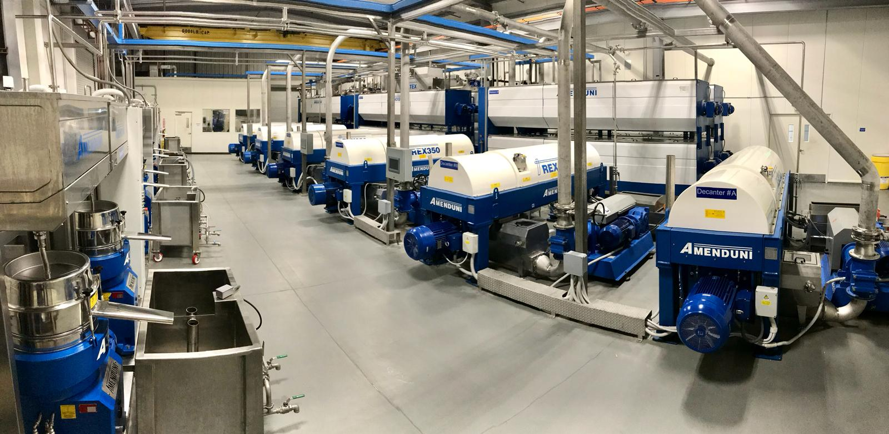

Chapter 04
This is where the daydream meets the regulator. The good news: the rules are learnable and mostly cheap. The one that surprises people: in New York, you cannot bottle olive oil in your home kitchen.
New York's Home Processing ("cottage food") exemption — the one that lets people sell jams and baked goods from a home kitchen — explicitly excludes oils. Its ineligible list names "Vegetable oils, blended oils, salad dressings." Bottling or repackaging olive oil at home is not allowed 1.
So you have exactly two legal routes to a labeled retail bottle:
Bottle in a commercial space licensed under New York's Article 20-C (below). More control and overhead.
A licensed facility fills and labels under your brand. Lowest overhead for a mom-and-pop — but you still register with FDA and own label compliance.
Anyone who manufactures, processes, packs, or holds food for US consumption must register with the FDA — and bottling olive oil counts. Registration and its biennial renewal are free, filed electronically through FDA Industry Systems. The renewal window is every even-numbered year, Oct 1 – Dec 31; a registration lapses if not renewed by year-end 2.
Food-safety rules (FSMA). As a registered facility you must follow Good Manufacturing Practices. A "qualified facility" (roughly under $1M/yr in food sales, meeting the direct-sales test) is exempt from the full preventive-controls plan and instead files an attestation. Bottling an already-finished, shelf-stable oil is low-risk — but ⚠️ confirm your status with FDA or a preventive-controls qualified individual 4.
"Extra virgin" is not federally mandated. The US has no mandatory olive-oil grade standard; USDA's grades (US Extra Virgin, etc.) are voluntary. US Extra Virgin means zero median defect, positive fruitiness, and free acidity ≤ 0.8%. FDA still enforces against false or misleading labeling — so only call it extra virgin if it genuinely is, and keep your supplier's analysis on file 5.
Five elements are required on a US food label 3:
"Extra Virgin Olive Oil" on the front / principal display panel.
In both US and metric units, e.g. 16 FL OZ (473 mL).
Yes, even a single-ingredient oil needs one. Any added flavoring must be evaluated for allergens ⚠️.
Of the manufacturer, packer, or distributor — this is you (or your brand's legal entity).
Unless you qualify for the small-business exemption — see below.
To bottle or pack food for wholesale or retail in New York you need a Food Processing Establishment license under Article 20-C, administered by the NYS Department of Agriculture & Markets. Applications run about 60 days and include a premises inspection 7.
| 20-C license fee (form FSI-303) | Cost |
|---|---|
| Small operation — ≤ 10 full-time employees, not a franchise/affiliate | $175 |
| Standard | $400 |
| Higher-oversight (hazardous / high-volume / multi-operation) | $900 |
| First-time applicant in a state-recognized incubator | $0 |
Biennial license; mail to NYS Dept of Ag & Markets, Food Safety License Unit, 10B Airline Drive, Albany NY 12235. ⚠️ Confirm the current form and fee at agriculture.ny.gov 7.
Light and oxygen are olive oil's enemies. Packaging is a quality decision, not just an aesthetic one 8:

In Saratoga Springs, NY (moved from Watervliet in 2017). Small "kit" packs at wholesale; glass oil bottles, caps, tins — an easy first call for a nearby small run 10.
Full glass/plastic/metal line — oil bottles 2–64 oz, caps, pour spouts, tamper-evident closures. O.Berk is now part of Berlin 11.
Bottles, tins, closures, and shipping supplies commonly used by small food brands. ⚠️ Check current minimums.
Cibaria International (no-minimum private label), OlivaMed / Liquid Manufacturing Solutions (OH), California Olive Oil Co-Packer — turnkey source-fill-label 12.
All links accessed 2026-07-23. Research only — not legal advice. Confirm with FDA and NYS Ag & Markets.